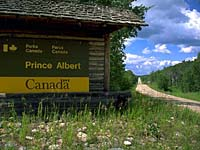
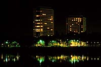
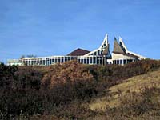

Saskatchewan's twelve cities are exciting, lively communities, with their own attractions, events and special personalities. Each community and it's special events are published each year in the Saskatchewan Events Guide available from Tourism Saskatchewan. Pick up the Vacation Guide as well, as this lists the attractions for each tourism region in the province. Specialty shops, like tea rooms, arts and crafts, and bed and breakfast vacation spots can be found throughout the province. | ||||
The city of Moose Jaw tells its story through impressive heritage buildings and outdoor murals. While there, visit the mineral spa for a day of total relaxation and pampering. Visit the Western Development Museum or Crescent Park and the Moose Jaw Art Museum. The Battlefords are the historic heart of the province along the beautiful North Saskatchewan River Valley. Close to North Battleford is Battleford Provincial Park situated along Jackfish Lake. | ||||
 Prince Albert is the gateway to the north. Here, the flat prarie turns to boreal forest and once again, travellers can view the North Saskatchewan River. A short drive away you will find beautiful Emma Lake, a favorite spot for artists and vacationers alike. Visit the numerous art galleries and shops in the vicinity. | ||||
Regina and Saskatoon are Saskatchewan's two major cities, accounting for one-third of the province's population. Two hundred and fifty kilometres separates the cities and each has its own unique qualities and attractions. | ||||
The capital, Regina, boasts one of the world's largest urban parks, Wascana Centre, a haven for joggers, hikers and cyclists and home to the provincial legislature, the Saskatchewan Museum of Natural History and the Saskatchewan Science Centre with its IMAX theatre. Numerous art galleries, fine eateries, antique malls and The University of Regina campus (new and old) are located close to the park. | ||||
 Saskatchewan's largest city, Saskatoon, is defined by the beautiful South Saskatchewan River. The Meewasin Valley Trail located along both sides of the river is a walker and jogger's delight. Various sculptors depicting Saskatchewan's past may be found throughout the downtown trail area and one can duck into the Meewasin Centre for a look at the history of the city. The Marr Residence, located almost directly across the river from the centre is the oldest residential building on its original foundation in Saskatoon. Various artifacts from the 19th century have been excavated from the backyard of the house and are on display. | ||||
 Other attractions include the Tyndall stone elegant University of Saskatchewan, the Little Stone Schoolhouse, Western Development Museum, Ukranian Museum, Saskatoon Zoo and Wanuskewin Heritage Park. Fresh berries may be picked at more than one u-pick berry sites including the Berry Barn nestled along the Saskatchewan River. Guided canoe trips down the river are available in the summer and cross-country skiing is a favorite along river-bank trails in the winter. | ||||